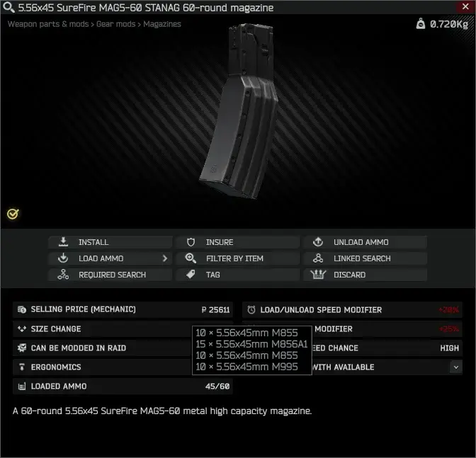
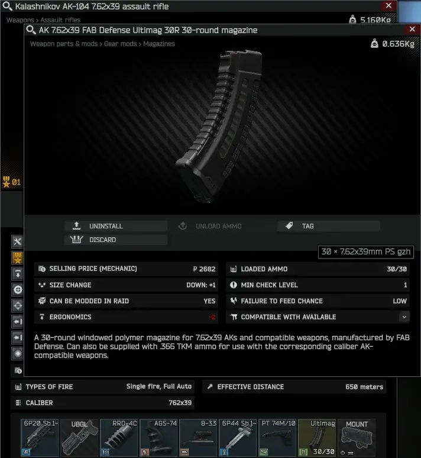
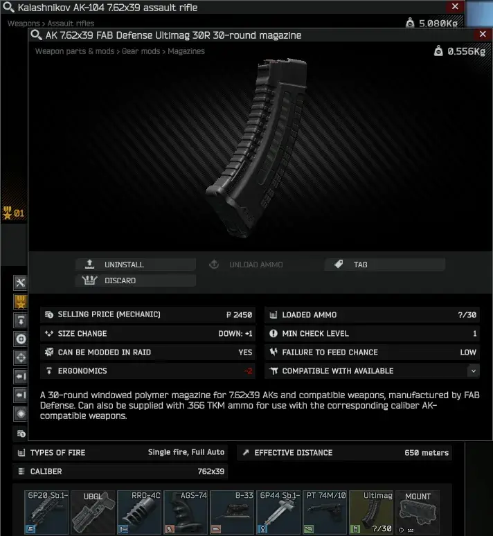
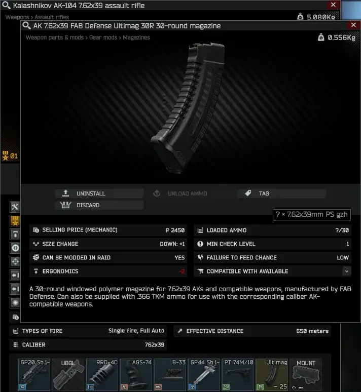

Magazine Inspector
- Downloads
- 13,138
- Favourites
- 24
- Mod lists
- 39
Installation:
Extract the ZIP to your SPT-AKI installation folder.
To fix hover tooltip not refreshing when ammo has been added/removed while the item’s inspection window is still open, use the “Item Attribute Fix” companion mod.
Description:
A client-side mod that replaces the “Max Count” attribute of magazines with “Loaded Ammo”, localized to other languages as well.
Hovering over the attribute will reveal all ammo types and their count from top to bottom.
The mod integrates neatly within the game’s world without exposing more information than the PMC/Scav’s “Mag Drills” skill allows.
So, you can do this without restrictions when outside of raid:

But while in a raid, only a full (and checked) or completely empty magazine is fully revealed:

And once you shoot and your magazine is no longer in “checked” state, you’ll need to check it again:

And once checked, you will see the ammo types in the stack, but the count will only be shown if an exact count is known (e.g. if your “Mag Drills” skill is high enough):

Version
1.7.0
Compiled for client version 0.16.9.0.40087
Version
1.6.0
Compiled for client version 0.16.1.3.35392
Version
1.5.0
Compiled for client version 0.15.5.1.33420